Trabajando para brindar una atención cercana, eficiente y transparente a los habitantes de la colonia Rubén Jaramillo y comunidades vecinas.
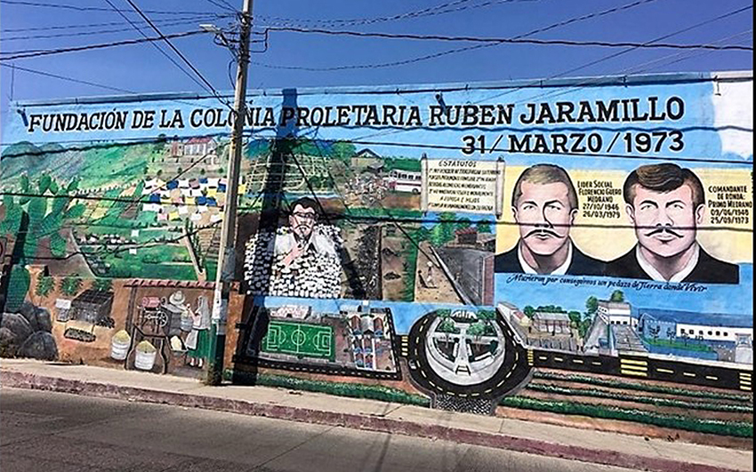
Mural conmemorativo de la fundación de la Colonia Proletaria Rubén Jaramillo (31 de marzo de 1973), que retrata la memoria histórica, la organización comunitaria y la lucha social de nuestra comunidad.
Cada 31 de marzo, nuestra comunidad se viste de fiesta para conmemorar la fundación de la Colonia Rubén Jaramillo. Es el día perfecto para recordar nuestra lucha, unirnos como familia y disfrutar de un gran desfile, deliciosa comida, música y una convivencia inolvidable.
¡Forma parte viva de nuestra historia!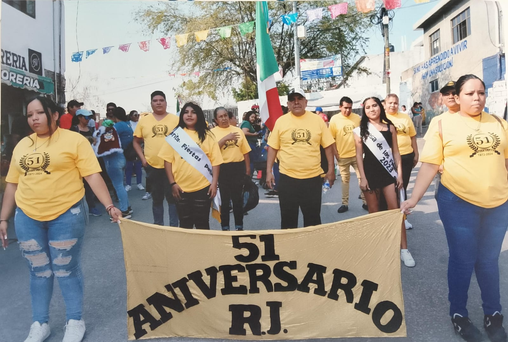
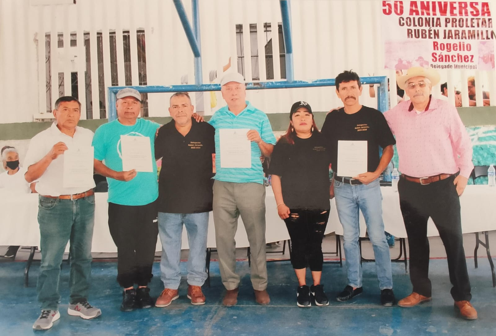
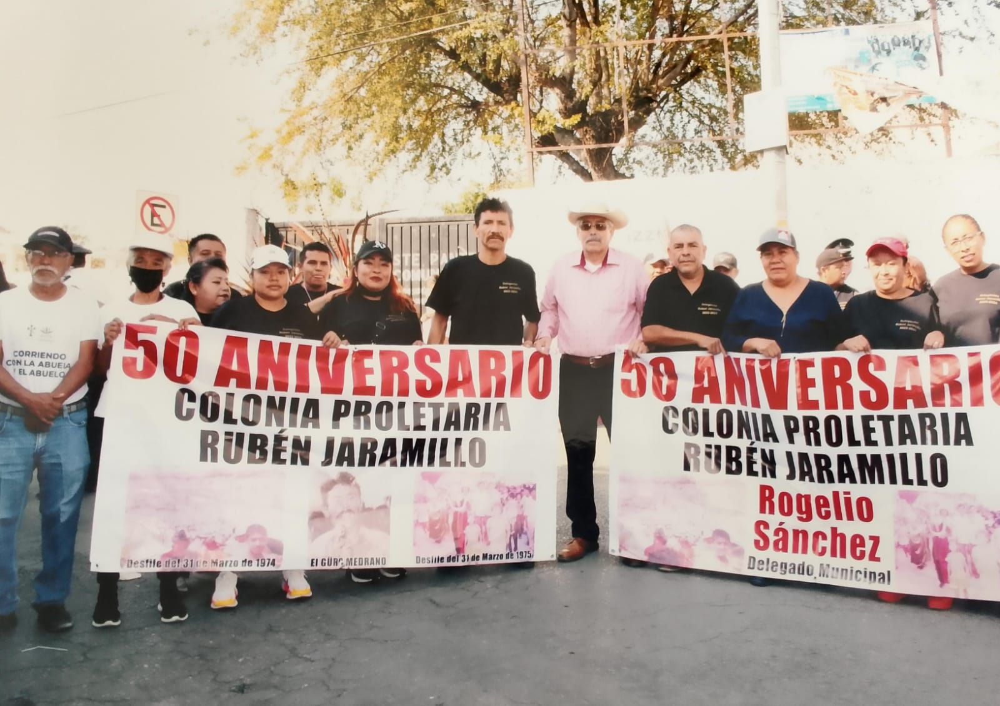
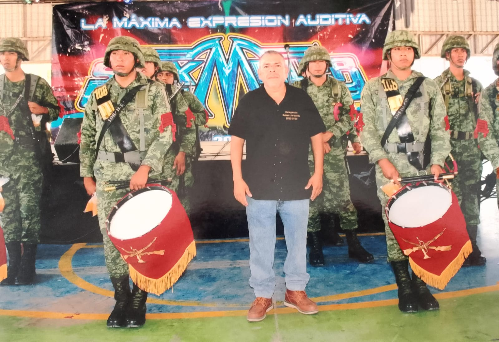
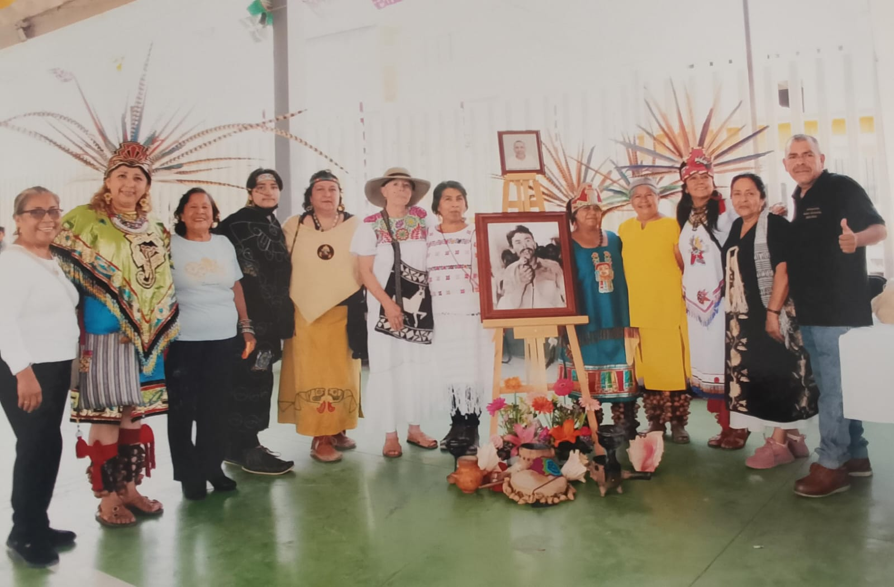
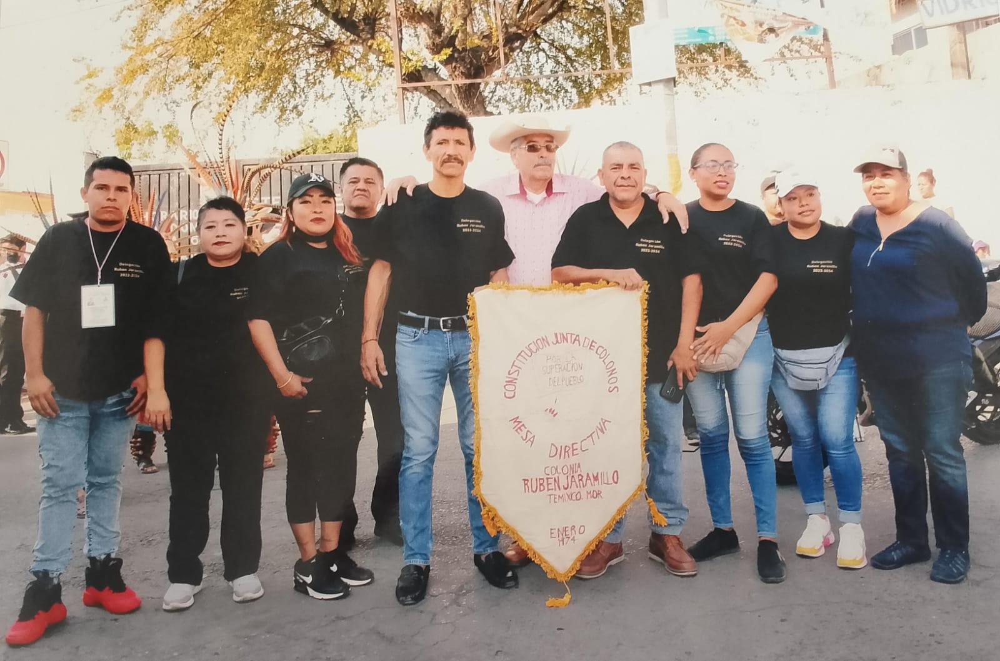
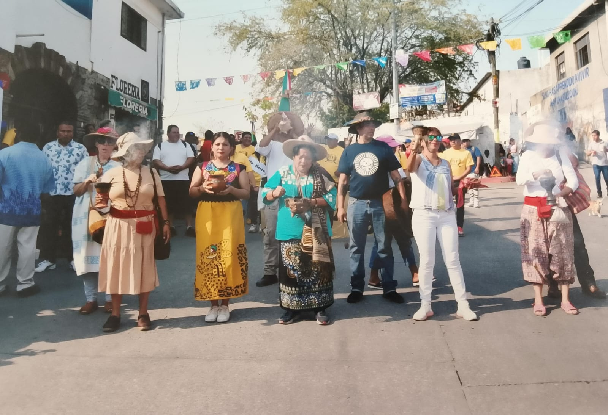
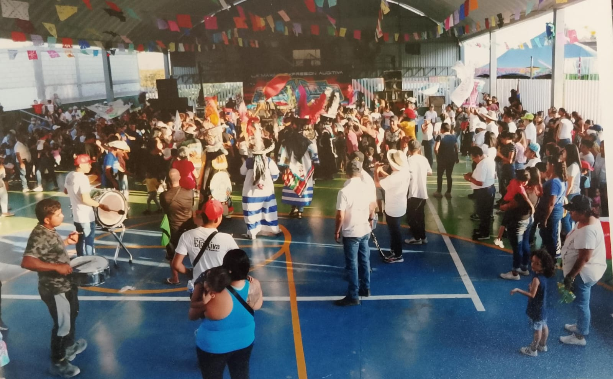
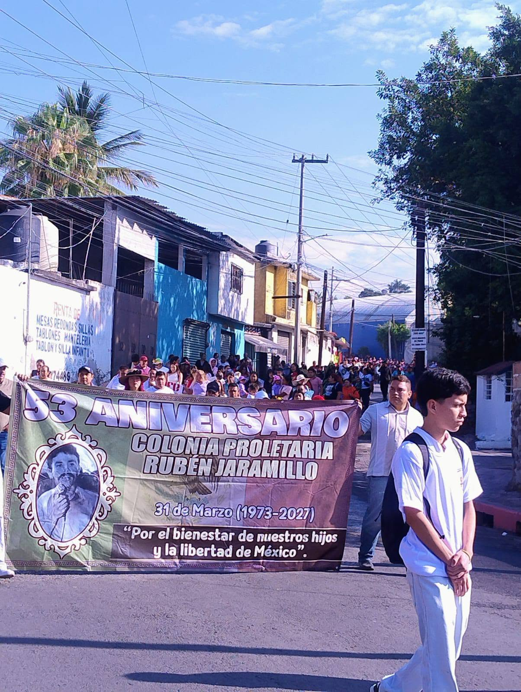
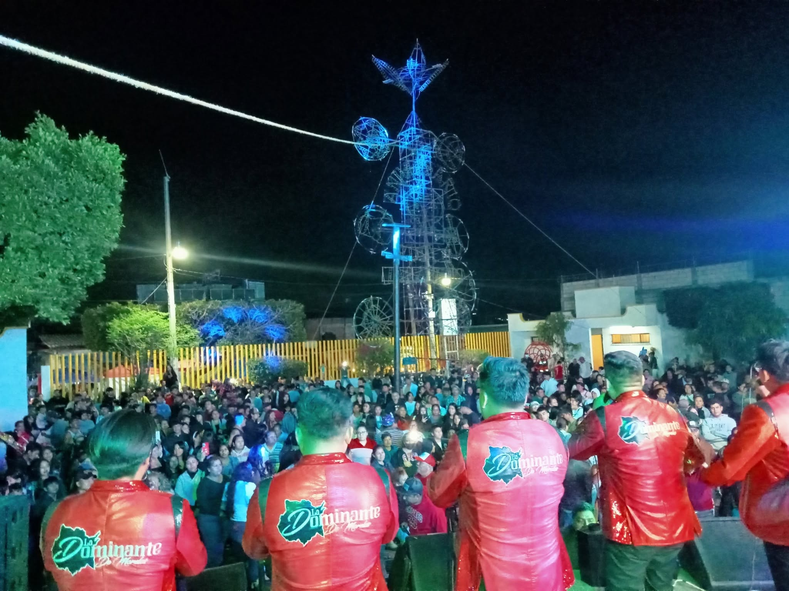
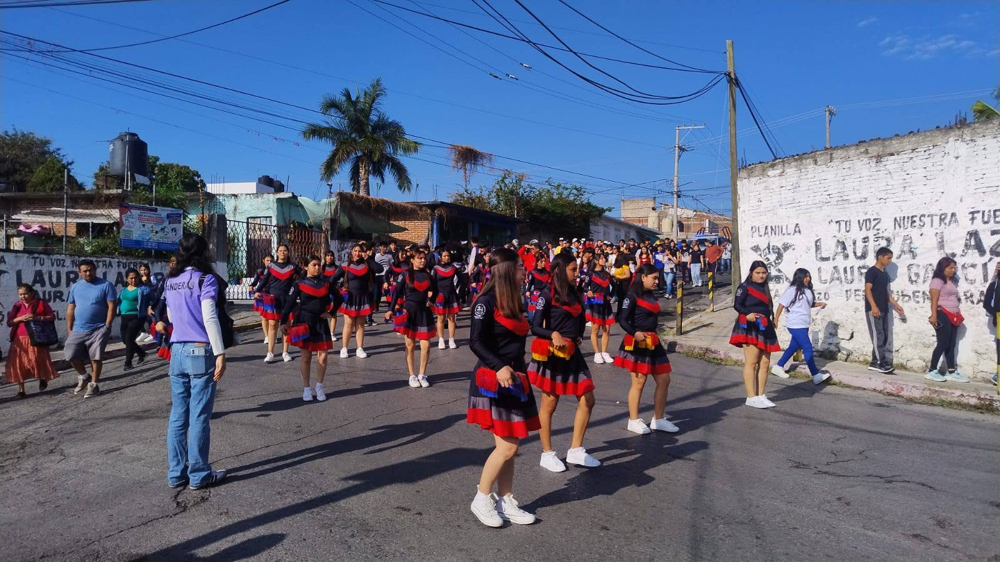
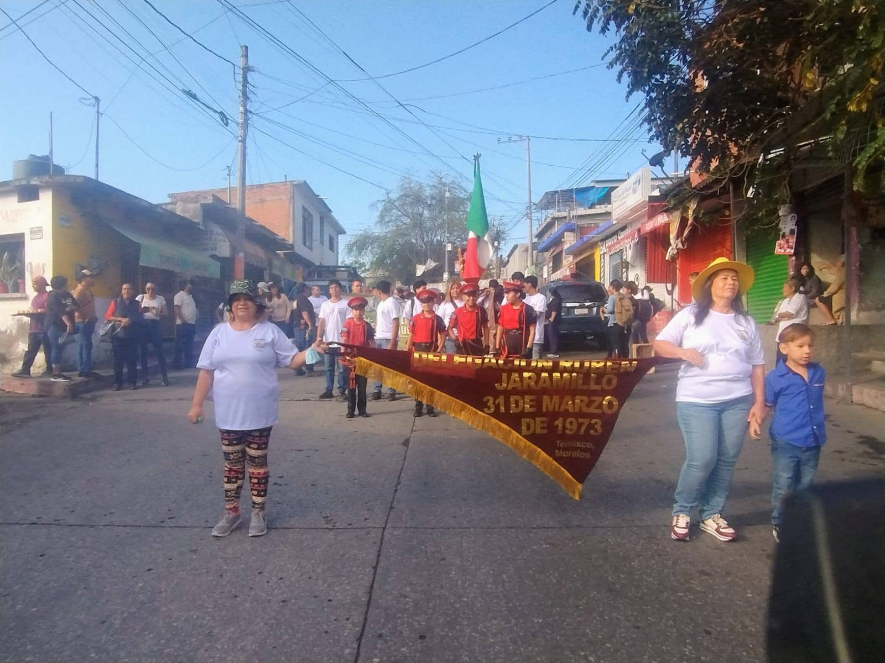
Mariano Matamoros esquina con Niño Artillero S/N
Colonia Rubén Jaramillo
C.P. 62587
Temixco, Morelos.
(777) 362-1830
Trabajamos para fortalecer la participación ciudadana y mejorar continuamente los servicios que recibe nuestra comunidad.
La Delegación Rubén Jaramillo mantiene un compromiso permanente con el desarrollo, la atención ciudadana y el bienestar de todas las familias.